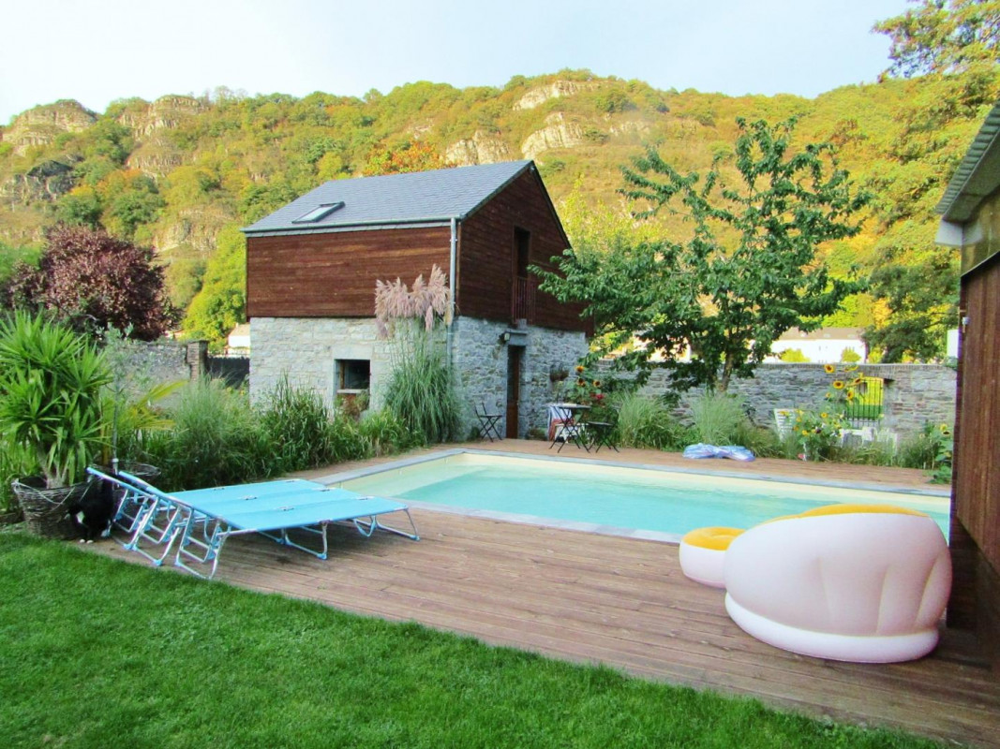
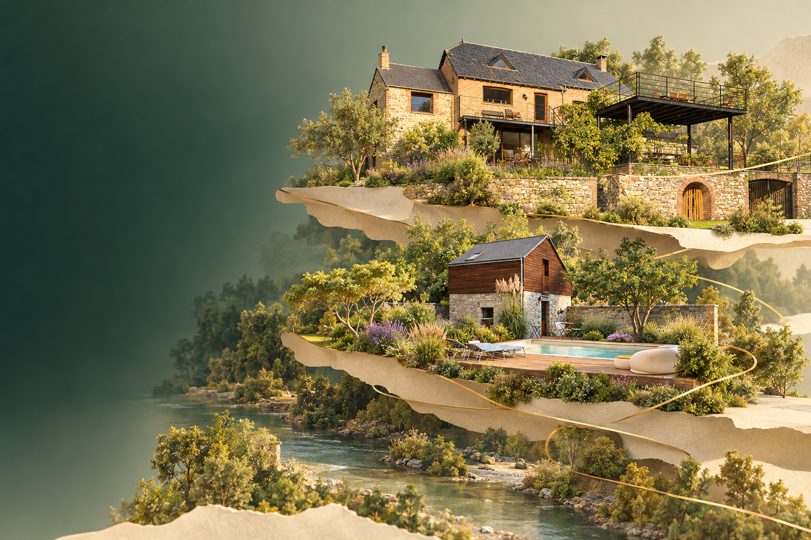
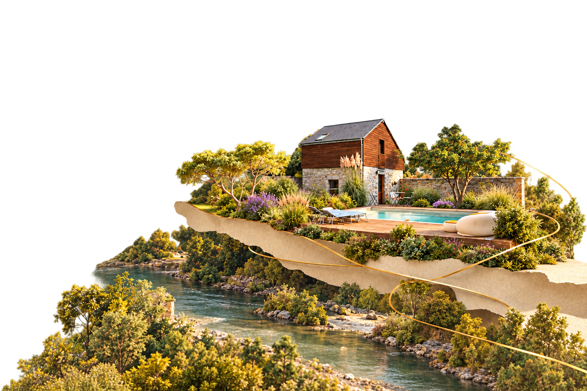
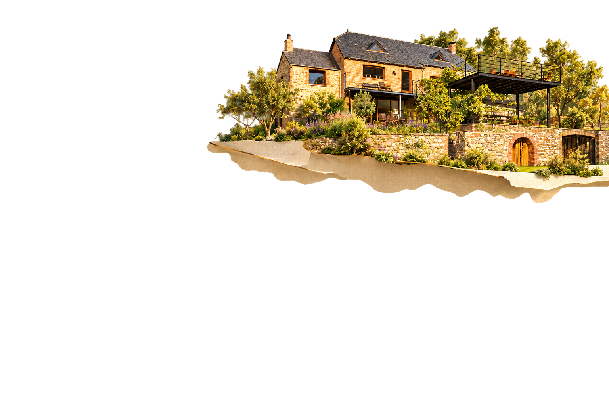
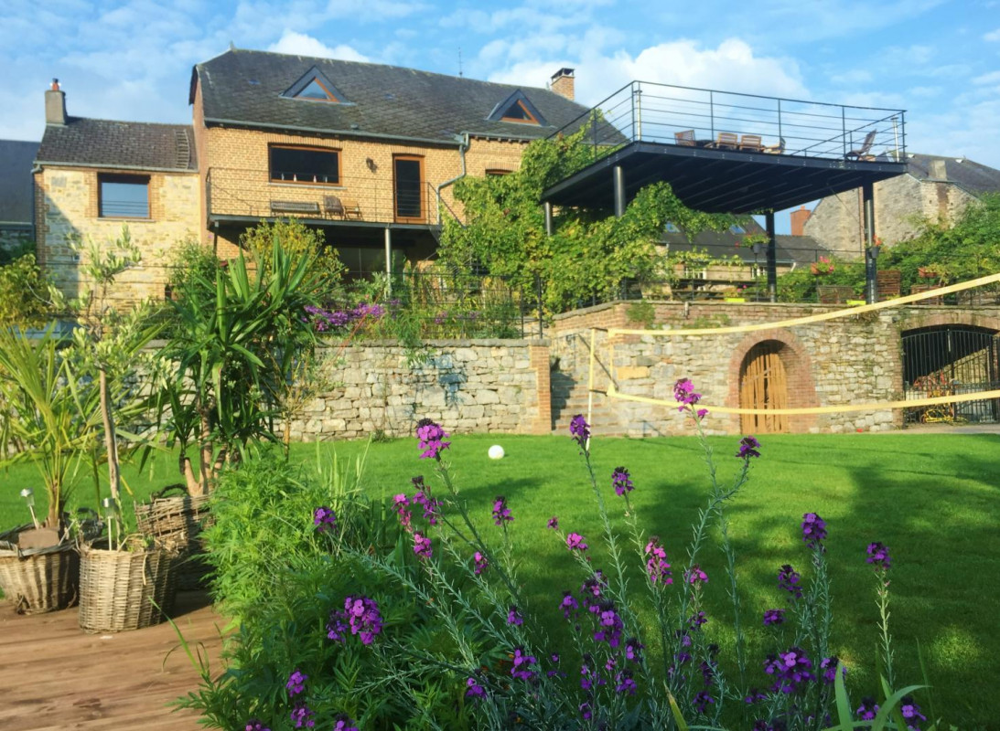
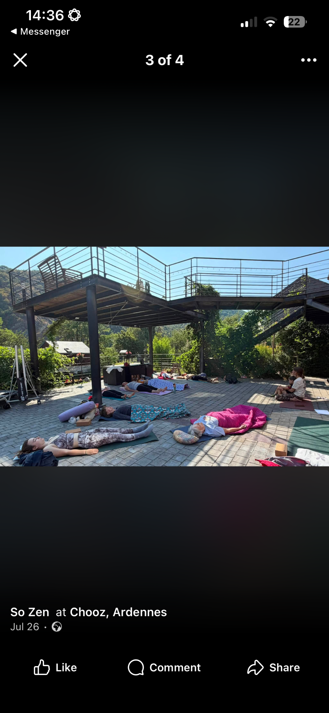

01


CHOOZ · ARDENNES · BORDS DE MEUSE
La parenthèse
verte.
Deux gîtes.
Un même art de ralentir.
UNE ESCALE, DEUX FAÇONS DE LA VIVRE
À deux. À douze.
À votre rythme.
Le Grain d’Amour pour une échappée à deux.
La Brasserie pour le plaisir de se retrouver.
À Chooz, laissez les Ardennes vous accueillir.

0212 personnes · 5 chambres · 240 m²
La Brasserie
Le bonheur de se retrouver.
VOTRE SÉJOUR, EN TOUTE SIMPLICITÉ
Posez les valises.
Gardez l’essentiel.
Wi-Fi, tri, énergie et petits repères : retrouvez les informations de votre gîte dans votre carnet de séjour.
Ouvrir mon carnet →CHOISIR SON ESCALE
Deux adresses.
Votre échappée.
À deux ou en tribu, découvrez le gîte qui vous ressemble.
← Les gîtes
CHOOZ · ARDENNES · 08G430
Le Grain d’Amour
Une échappée à deux.
Une maison indépendante au cœur d’un jardin partagé, pour savourer les Ardennes à deux.
2 personnes1 chambre55 m²
Réserver sur Gîtes de France Les disponibilités, tarifs et conditions sont confirmés sur la plateforme.
Wi-FiCuisine et séjourChambre à l’étageJardin et piscine partagés
VOTRE CARNET DE SÉJOUR
Installez-vous.
On vous guide.
← Les gîtes
CHOOZ · ARDENNES · 08G339
La Brasserie
Le bonheur de se retrouver.
De généreux espaces de vie, une terrasse et la vallée de la Meuse pour les retrouvailles en famille ou entre amis.
12 personnes5 chambres240 m²
Réserver sur Gîtes de France Les disponibilités, tarifs et conditions sont confirmés sur la plateforme.
Wi-FiGrande pièce de vie5 chambresVue Meuse et forêt
VOTRE CARNET DE SÉJOUR
Installez-vous.
On vous guide.
LE CARNET QUI VOUS ACCOMPAGNE
Bienvenue
chez vous.
Sélectionnez votre gîte pour retrouver vos repères.
01 Wi-Fi
Le Wi-Fi est disponible dans votre gîte. Pour le nom du réseau et le mot de passe, demandez les informations à votre hôte.
02 Tri et poubelles
Triez vos déchets et gardez les espaces communs propres. Votre hôte vous indiquera l’emplacement des bacs et les consignes de collecte adaptées au gîte.
03 Électricité et chauffage
04 Respect des lieux
Prenez soin du logement et des espaces partagés. Pensez à la tranquillité du voisinage et signalez à votre hôte tout problème rencontré.
05 Jardin et piscine
La piscine est partagée et chauffée de mai à septembre selon les fiches. Suivez les consignes communiquées sur place et surveillez les enfants.
06 Animaux et linge
07 Arrivée et départ
Les horaires, la remise des clés et les consignes de départ vous seront confirmés par votre hôte.
08 Espace bien-être
Sauna, spa et hammam sont accessibles sur demande, selon les disponibilités des propriétaires et avec supplément. Contactez votre hôte pour les modalités.
Ces repères complètent votre réservation. Les instructions personnalisées et les conditions de votre fiche restent votre référence.
LE CARNET DES ALENTOURS
Au fil
de vos envies.
Une balade, une visite, une bonne adresse : choisissez votre prochaine escale.
4 idées à découvrir
Chooz
La Meuse à votre rythme
À pied ou à vélo, découvrez la Voie Verte et le paysage des bords de Meuse.
Découvrir la balade ↗Givet
Fort de Charlemont
Un lieu d’histoire et des activités à découvrir au-dessus de la Meuse.
Préparer ma visite ↗2 place Carnot · Givet
Pâtisserie Léval
Une adresse pour les douceurs, le pain et une pause au salon de thé.
Voir l’adresse ↗Chooz
Presqu’île de Chooz
Une suggestion de restaurant dans le village. Consultez les formules et disponibilités auprès de l’établissement.
Découvrir le restaurant ↗Consultez les sites des établissements pour les horaires, tarifs et conditions du jour.
SO ZEN · CHOOZ · ARDENNES
Un moment
pour soi.
Yoga, détente
et moments partagés à Chooz.
Des activités de yoga sont proposées sur place, dans le cadre verdoyant des gîtes. Découvrez les prochains rendez-vous sur la page Facebook So Zen et prenez contact pour connaître les modalités de participation.
Les actualités So Zen ↗06 21 11 43 58Rue Tony · Chooz

Prendre le temps.
Respirer. Se retrouver.
Respirer. Se retrouver.
LE YOGA AU CŒUR DES GÎTES
Une pause.
Un moment ensemble.
Les activités de yoga So Zen invitent à prendre un temps pour soi, dans le cadre des gîtes à Chooz. Les photos partagées ici montrent ces moments vécus sur place.
Pour les dates, les disponibilités, les tarifs et les modalités de participation, consultez les actualités So Zen ou contactez directement l’équipe.
Découvrir les prochains rendez-vous ↗PROLONGER LA DÉTENTE
L’espace bien-être des gîtes.
Les fiches des hébergements proposent sauna, spa et hammam sur demande, selon disponibilité et avec supplément. Votre hôte vous précisera les conditions d’accès.
Retrouver les informations de mon gîte →